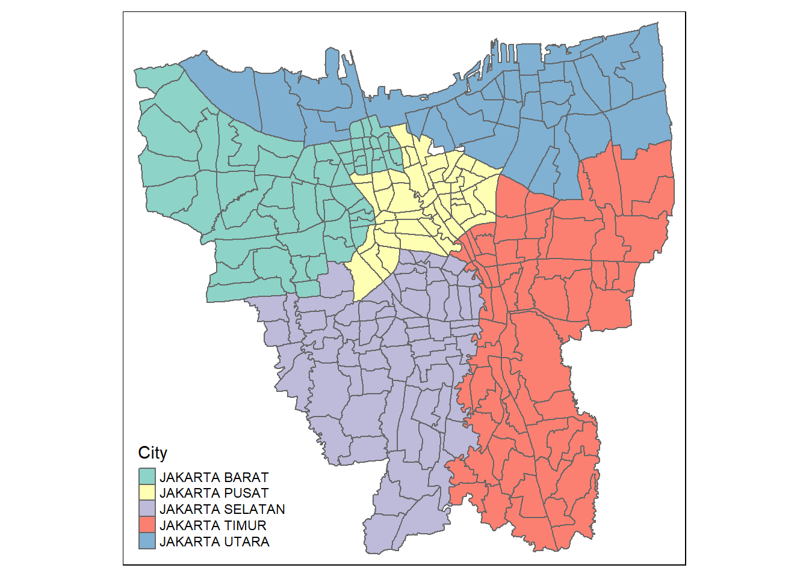
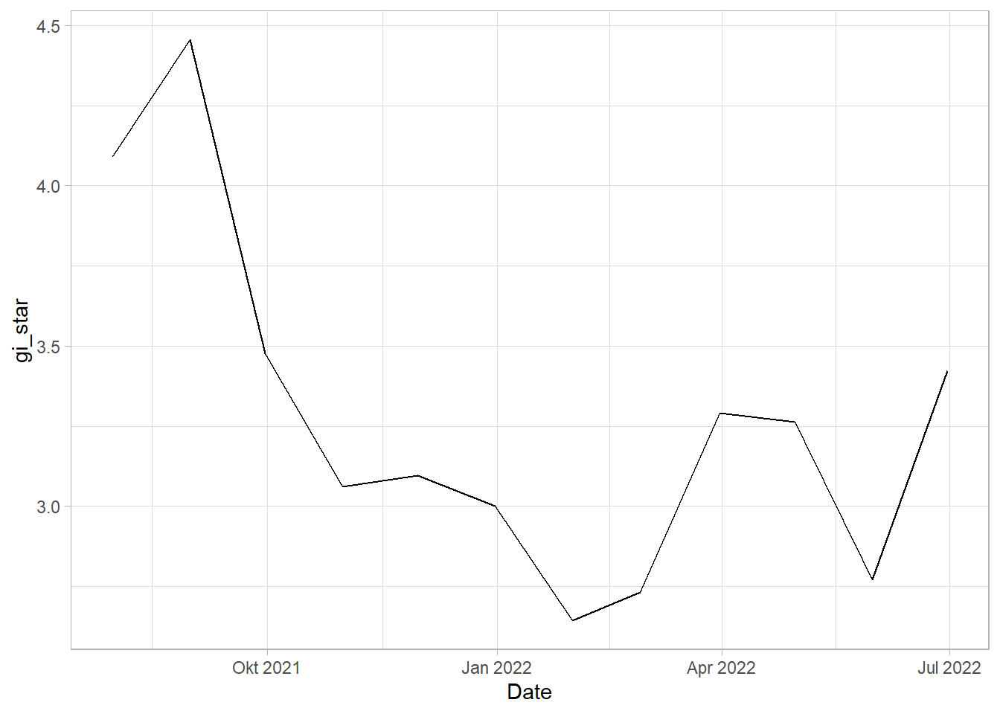

pacman::p_load(plyr, sf, tidyverse, readxl, tmap, maptools, kableExtra, sfdep, dplyr,plotly)Take home assignment 2
Imports
Import packages
Import data
Import Geospatial data
jkt_sf <- st_read(dsn="data/geospatial",
layer="BATAS_DESA_DESEMBER_2019_DUKCAPIL_DKI_JAKARTA")Reading layer `BATAS_DESA_DESEMBER_2019_DUKCAPIL_DKI_JAKARTA' from data source
`C:\Study\Y3\S2\IS415\ELAbishek\IS415-GAA\Takehome_exercise\TakeHome2\data\geospatial'
using driver `ESRI Shapefile'
Simple feature collection with 269 features and 161 fields
Geometry type: MULTIPOLYGON
Dimension: XY
Bounding box: xmin: 106.3831 ymin: -6.370815 xmax: 106.9728 ymax: -5.184322
Geodetic CRS: WGS 84jkt_sf <- jkt_sf %>%
st_transform(crs = 23845)Import Aspatial data
Since we need monthly vaccination rate, we will be taking all the vaccination data from July 2021 to June 2022
oct2021 <- read_xlsx("data/aspatial/Data Vaksinasi Berbasis Kelurahan (31 Oktober 2021).xlsx")Data pre-processing
jkt_sf <- jkt_sf %>% filter(`KAB_KOTA` %in% c('JAKARTA BARAT',
'JAKARTA PUSAT',
'JAKARTA SELATAN',
'JAKARTA TIMUR',
'JAKARTA UTARA'))We are excluding the islands from the data. We do that by filtering out just the mainland cities
Checking for NA values
jkt_sf[rowSums(is.na(jkt_sf))!=0,]Simple feature collection with 0 features and 161 fields
Bounding box: xmin: NA ymin: NA xmax: NA ymax: NA
Projected CRS: DGN95 / Indonesia TM-3 zone 54.1
[1] OBJECT_ID KODE_DESA DESA KODE PROVINSI KAB_KOTA
[7] KECAMATAN DESA_KELUR JUMLAH_PEN JUMLAH_KK LUAS_WILAY KEPADATAN
[13] PERPINDAHA JUMLAH_MEN PERUBAHAN WAJIB_KTP SILAM KRISTEN
[19] KHATOLIK HINDU BUDHA KONGHUCU KEPERCAYAA PRIA
[25] WANITA BELUM_KAWI KAWIN CERAI_HIDU CERAI_MATI U0
[31] U5 U10 U15 U20 U25 U30
[37] U35 U40 U45 U50 U55 U60
[43] U65 U70 U75 TIDAK_BELU BELUM_TAMA TAMAT_SD
[49] SLTP SLTA DIPLOMA_I DIPLOMA_II DIPLOMA_IV STRATA_II
[55] STRATA_III BELUM_TIDA APARATUR_P TENAGA_PEN WIRASWASTA PERTANIAN
[61] NELAYAN AGAMA_DAN PELAJAR_MA TENAGA_KES PENSIUNAN LAINNYA
[67] GENERATED KODE_DES_1 BELUM_ MENGUR_ PELAJAR_ PENSIUNA_1
[73] PEGAWAI_ TENTARA KEPOLISIAN PERDAG_ PETANI PETERN_
[79] NELAYAN_1 INDUSTR_ KONSTR_ TRANSP_ KARYAW_ KARYAW1
[85] KARYAW1_1 KARYAW1_12 BURUH BURUH_ BURUH1 BURUH1_1
[91] PEMBANT_ TUKANG TUKANG_1 TUKANG_12 TUKANG__13 TUKANG__14
[97] TUKANG__15 TUKANG__16 TUKANG__17 PENATA PENATA_ PENATA1_1
[103] MEKANIK SENIMAN_ TABIB PARAJI_ PERANCA_ PENTER_
[109] IMAM_M PENDETA PASTOR WARTAWAN USTADZ JURU_M
[115] PROMOT ANGGOTA_ ANGGOTA1 ANGGOTA1_1 PRESIDEN WAKIL_PRES
[121] ANGGOTA1_2 ANGGOTA1_3 DUTA_B GUBERNUR WAKIL_GUBE BUPATI
[127] WAKIL_BUPA WALIKOTA WAKIL_WALI ANGGOTA1_4 ANGGOTA1_5 DOSEN
[133] GURU PILOT PENGACARA_ NOTARIS ARSITEK AKUNTA_
[139] KONSUL_ DOKTER BIDAN PERAWAT APOTEK_ PSIKIATER
[145] PENYIA_ PENYIA1 PELAUT PENELITI SOPIR PIALAN
[151] PARANORMAL PEDAGA_ PERANG_ KEPALA_ BIARAW_ WIRASWAST_
[157] LAINNYA_12 LUAS_DESA KODE_DES_3 DESA_KEL_1 KODE_12 geometry
<0 rows> (or 0-length row.names)No NA values were found in any records, so we can proceed with our analysis
Translation
I realized pretty quickly that if I were to continue working with data in a language I am not very proficient in, this whole analysis could become very tedious, so for convenience sake, I will be performing translation of the data
jkt_sf <- jkt_sf %>%
dplyr::rename(
Object_ID=OBJECT_ID,
Province=PROVINSI,
City=KAB_KOTA,
District=KECAMATAN,
Village_Code=KODE_DESA,
Village=DESA,
Sub_District=DESA_KELUR,
Code=KODE,
Total_Population=JUMLAH_PEN
)Nice, now the relevant columns are in English
Choosing necessary columns
jkt_sf <- jkt_sf[, 0:9]Visualizing Jakarta
tm_shape(jkt_sf) +
tm_polygons("City")
Trying to aspatial import stuff
aspatial_preprocess <- function(filepath){
result_file <- read_xlsx(filepath, .name_repair="minimal")
result_file <- result_file[, !duplicated(colnames(result_file), fromLast = TRUE)]
startpoint <- gregexpr(pattern="Kelurahan", filepath)[[1]] + 11
endpoint <- gregexpr(pattern=")", filepath)[[1]] -1
result_file$Date <- substr(filepath, startpoint, endpoint)
# Retain the Relevant Columns
result_file <- result_file %>%
select("Date",
"KODE KELURAHAN",
"WILAYAH KOTA",
"KECAMATAN",
"KELURAHAN",
"SASARAN",
"BELUM VAKSIN",
"TOTAL VAKSIN\r\nDIBERIKAN"
)
return(result_file)
}fileslist <-list.files(path = "data/aspatial", pattern = "*.xlsx", full.names=TRUE)
dflist <- lapply(seq_along(fileslist), function(x) aspatial_preprocess(fileslist[x]))vac_jkt <- ldply(dflist, data.frame)glimpse(vac_jkt)Rows: 3,216
Columns: 8
$ Date <chr> "27 Februari 2022", "27 Februari 2022", "27 Fe…
$ KODE.KELURAHAN <chr> NA, "3172051003", "3173041007", "3175041005", …
$ WILAYAH.KOTA <chr> NA, "JAKARTA UTARA", "JAKARTA BARAT", "JAKARTA…
$ KECAMATAN <chr> NA, "PADEMANGAN", "TAMBORA", "KRAMAT JATI", "J…
$ KELURAHAN <chr> "TOTAL", "ANCOL", "ANGKE", "BALE KAMBANG", "BA…
$ SASARAN <dbl> 8941211, 23947, 29381, 29074, 9752, 26285, 215…
$ BELUM.VAKSIN <dbl> 1517196, 4592, 5319, 5903, 1649, 4030, 3950, 3…
$ TOTAL.VAKSIN..DIBERIKAN <dbl> 14014395, 36042, 44800, 42925, 15348, 42415, 3…Checking for Null values
vac_jkt[rowSums(is.na(vac_jkt))!=0,] Date KODE.KELURAHAN WILAYAH.KOTA KECAMATAN KELURAHAN SASARAN
1 27 Februari 2022 <NA> <NA> <NA> TOTAL 8941211
269 30 April 2022 <NA> <NA> <NA> TOTAL 8941211
537 30 Juni 2022 <NA> <NA> <NA> TOTAL 8941211
805 30 November 2021 <NA> <NA> <NA> TOTAL 8941211
1073 30 September 2021 <NA> <NA> <NA> TOTAL 8941211
1341 31 Agustus 2021 <NA> <NA> <NA> TOTAL 8941211
1609 31 Desember 2021 <NA> <NA> <NA> TOTAL 8941211
1877 31 Januari 2022 <NA> <NA> <NA> TOTAL 8941211
2145 31 Juli 2021 <NA> <NA> <NA> TOTAL 8941211
2413 31 Maret 2022 <NA> <NA> <NA> TOTAL 8941211
2681 31 Mei 2022 <NA> <NA> <NA> TOTAL 8941211
2949 31 Oktober 2021 <NA> <NA> <NA> TOTAL 8941211
BELUM.VAKSIN TOTAL.VAKSIN..DIBERIKAN
1 1517196 14014395
269 1453423 16935586
537 1431393 17297996
805 1723821 13390026
1073 2235772 11877136
1341 3277484 9076633
1609 1623736 13687650
1877 1538221 13919668
2145 4441501 6162928
2413 1482471 15978162
2681 1445540 17124736
2949 1880524 12789688Removing rows with null values
vac_jkt <- na.omit(vac_jkt,c("KODE.KELURAHAN", "WILAYAH.KOTA", "KECAMATAN"))Reformatting date
The date column is currently of string format, I will be changing that to date format
Sys.setlocale(locale="ind") #The dates are all written in Bahasa Indonesia[1] "LC_COLLATE=Indonesian_Indonesia.1252;LC_CTYPE=Indonesian_Indonesia.1252;LC_MONETARY=Indonesian_Indonesia.1252;LC_NUMERIC=C;LC_TIME=Indonesian_Indonesia.1252"vac_jkt$Date <- c(vac_jkt$Date) %>%
as.Date(vac_jkt$Date, format ="%d %B %Y")
glimpse(vac_jkt)Rows: 3,204
Columns: 8
$ Date <date> 2022-02-27, 2022-02-27, 2022-02-27, 2022-02-2~
$ KODE.KELURAHAN <chr> "3172051003", "3173041007", "3175041005", "317~
$ WILAYAH.KOTA <chr> "JAKARTA UTARA", "JAKARTA BARAT", "JAKARTA TIM~
$ KECAMATAN <chr> "PADEMANGAN", "TAMBORA", "KRAMAT JATI", "JATIN~
$ KELURAHAN <chr> "ANCOL", "ANGKE", "BALE KAMBANG", "BALI MESTER~
$ SASARAN <dbl> 23947, 29381, 29074, 9752, 26285, 21566, 23886~
$ BELUM.VAKSIN <dbl> 4592, 5319, 5903, 1649, 4030, 3950, 3344, 9382~
$ TOTAL.VAKSIN..DIBERIKAN <dbl> 36042, 44800, 42925, 15348, 42415, 33278, 3929~Translation of data
Similar to the translations earlier on geospatial data, I will now be translating the jakarta vaccinations dataframe from Bahasa to English
vac_jkt <- vac_jkt %>%
dplyr::rename(
Date=Date,
Sub_district_code=KODE.KELURAHAN,
City=WILAYAH.KOTA,
District=KECAMATAN,
Sub_District = KELURAHAN,
Target_Vaccination=SASARAN,
Unvaccinated = BELUM.VAKSIN,
Vaccinated = TOTAL.VAKSIN..DIBERIKAN
)I got this from my friend who was kind enough to translate everything for me :>
Integrating data
Joining data by sub district
Sub_District, and city are the columns that are shared among jkt_sf and vac_jkt so I will be using that for performing join on the two dataframes
jkt <- left_join(jkt_sf, vac_jkt,
by=c(
"Sub_District"="Sub_District",
"City"="City")
)Vaccination Rates mapping
vac = tm_shape(jkt)+
tm_fill("Vaccinated") +
tm_borders(alpha = 0.5) +
tm_layout(main.title="vaccinated")
unvac = tm_shape(jkt)+
tm_fill("Unvaccinated") +
tm_borders(alpha = 0.5) +
tm_layout(main.title="unvaccinated")
tmap_arrange(vac, unvac)
Dealing with mismatched sub-district names
vac_subdistrict <- c(vac_jkt$Sub_District)
bd_subdistrict <- c(jkt_sf$Sub_District)
unique(vac_subdistrict[!(vac_subdistrict %in% bd_subdistrict)]) [1] "BALE KAMBANG" "HALIM PERDANA KUSUMAH" "JATI PULO"
[4] "KAMPUNG TENGAH" "KERENDANG" "KRAMAT JATI"
[7] "PAL MERIAM" "PINANG RANTI" "PULAU HARAPAN"
[10] "PULAU KELAPA" "PULAU PANGGANG" "PULAU PARI"
[13] "PULAU TIDUNG" "PULAU UNTUNG JAWA" "RAWA JATI" unique(bd_subdistrict[!(bd_subdistrict %in% vac_subdistrict)])[1] "KRENDANG" "RAWAJATI" "TENGAH"
[4] "BALEKAMBANG" "PINANGRANTI" "JATIPULO"
[7] "PALMERIAM" "KRAMATJATI" "HALIM PERDANA KUSUMA"spelling <- data.frame(
Aspatial_vac=c("BALE KAMBANG", "HALIM PERDANA KUSUMAH", "JATI PULO", "KALI BARU", "KAMPUNG TENGAH", "KRAMAT JATI", "KERENDANG", "PAL MERIAM", "PINANG RANTI", "RAWA JATI"),
Geospatial_BD=c("BALEKAMBAG", "HALIM PERDANA KUSUMA", "JATIPULO", "KALIBARU", "TENGAH", "KRAMATJATI", "KRENDANG", "PALMERIAM", "PINANGRANTI", "RAWAJATI")
)
# with dataframe a input, outputs a kable
library(knitr)
library(kableExtra)
kable(spelling, caption="Mismatched Records") %>%
kable_material("hover", latex_options="scale_down")| Aspatial_vac | Geospatial_BD |
|---|---|
| BALE KAMBANG | BALEKAMBAG |
| HALIM PERDANA KUSUMAH | HALIM PERDANA KUSUMA |
| JATI PULO | JATIPULO |
| KALI BARU | KALIBARU |
| KAMPUNG TENGAH | TENGAH |
| KRAMAT JATI | KRAMATJATI |
| KERENDANG | KRENDANG |
| PAL MERIAM | PALMERIAM |
| PINANG RANTI | PINANGRANTI |
| RAWA JATI | RAWAJATI |
jkt_sf$Sub_District[jkt_sf$Sub_District == 'BALEKAMBANG'] <- 'BALE KAMBANG'
jkt_sf$Sub_District[jkt_sf$Sub_District == 'HALIM PERDANA KUSUMA'] <- 'HALIM PERDANA KUSUMAH'
jkt_sf$Sub_District[jkt_sf$Sub_District == 'JATIPULO'] <- 'JATI PULO'
jkt_sf$Sub_District[jkt_sf$Sub_District == 'KALIBARU'] <- 'KALI BARU'
jkt_sf$Sub_District[jkt_sf$Sub_District == 'TENGAH'] <- 'KAMPUNG TENGAH'
jkt_sf$Sub_District[jkt_sf$Sub_District == 'KRAMATJATI'] <- 'KRAMAT JATI'
jkt_sf$Sub_District[jkt_sf$Sub_District == 'KRENDANG'] <- 'KERENDANG'
jkt_sf$Sub_District[jkt_sf$Sub_District == 'PALMERIAM'] <- 'PAL MERIAM'
jkt_sf$Sub_District[jkt_sf$Sub_District == 'PINANGRANTI'] <- 'PINANG RANTI'
jkt_sf$Sub_District[jkt_sf$Sub_District == 'RAWAJATI'] <- 'RAWA JATI'jkt <- left_join(jkt_sf, vac_jkt,
by=c("Sub_District"="Sub_District")
)vac = tm_shape(jkt)+
tm_fill("Vaccinated") +
tm_borders(alpha = 0.5) +
tm_layout(main.title="vaccinated")
unvac = tm_shape(jkt)+
tm_fill("Unvaccinated") +
tm_borders(alpha = 0.5) +
tm_layout(main.title="unvaccinated")
tmap_arrange(vac, unvac)Vaccination Rate calculation
The monthly vaccination rate is calculated by doing ((Vaccinated population)/(People count)) *100
To get Vaccinated population we will be doing Target_Vaccination - Unvaccinated = Vaccinated population
VR <- vac_jkt %>%
inner_join(jkt_sf, by=c("Sub_District" = "Sub_District")) %>%
group_by(Sub_District, Date) %>%
dplyr::summarise(`Vaccination_Rate` = ((Target_Vaccination - Unvaccinated)/ Target_Vaccination) * 100) %>%
ungroup() %>% pivot_wider(names_from = Date,
values_from = Vaccination_Rate)jkt <- st_as_sf(jkt)
VR <- VR%>% left_join(jkt_sf, by=c("Sub_District"="Sub_District"))
VR <- st_as_sf(VR)Plotting monthly vaccination rate
First we will plot the rate map for 31st of July 2021
tmap_mode("plot")
tm_shape(VR)+
tm_fill("2021-07-31",
n= 6,
style = "jenks",
title = "VR") +
tm_layout(main.title = "-",
main.title.position = "center",
main.title.size = 1,
legend.height = 0.5,
legend.width = 0.4,
frame = TRUE) +
tm_borders(alpha = 0.5)
Now to plot the rate map for the rest of the 11 months together. We will do this using a function
jenks_plot <- function(df, varname) {
tm_shape(VR) +
tm_polygons() +
tm_shape(df) +
tm_fill(varname,
n= 6,
style = "jenks",
title = "Monthly vaccination rate") +
tm_layout(main.title = varname,
main.title.position = "center",
main.title.size = 1.2,
legend.height = 0.45,
legend.width = 0.35,
frame = TRUE) +
tm_borders(alpha = 0.5)
}31 July 2021 to 31 October 2021
tmap_mode("plot")
tmap_arrange(jenks_plot(VR, "2021-07-31"),
jenks_plot(VR, "2021-08-31"),
jenks_plot(VR, "2021-09-30"),
jenks_plot(VR, "2021-10-31"))30 November 2021 to 27 February 2022
tmap_arrange(
jenks_plot(VR, "2021-11-30"),
jenks_plot(VR, "2021-12-31"),
jenks_plot(VR, "2022-01-31"),
jenks_plot(VR, "2022-02-27"))31 March 2022 to 30 June 2022
tmap_arrange(
jenks_plot(VR, "2022-03-31"),
jenks_plot(VR, "2022-04-30"),
jenks_plot(VR, "2022-05-31"),
jenks_plot(VR, "2022-06-30"))Observation
The vaccination rates were of course uneven across the sub-districts (Kelurahan). During the first four months of when the vaccinations were being rolled out ( 31 July 2021 to 31 October 2021 ), we can notice dark coloured spots in sub-districts such as Penjaringan, Makasar, Kelapa Gading. This shows that in those states they were able to set up facilities to get more people vaccinated as fast as possible and was able to facilitate large numbers of vaccinations per month.
sub-districts such as Tanjung Priok, Kelapa Gading, and Kemayoran have always maintained their high monthly vaccination rates in the period from July 2021 to June 2022. This high vaccination rate steadily slowed down towards the end, but in these states a good portion of the populace was able to get access to vaccination as soon as possible.
Some sub-districts still retained their lower vaccination rates throughout the year. This could be due to a variety of reasons such as large anti-vaccine sentiments spreading through these regions, or insufficient facilities to increase vaccination rates. Though, by following these trends, by now these regions should have significantly higher vaccination rates.
Local Gi* analysis
Creating a Time Series object
Recreate Vaccination rate dataframe VR but this time without the pivot wider
VR <- vac_jkt %>%
inner_join(jkt_sf, by=c("Sub_District" = "Sub_District")) %>%
group_by(Sub_District, Date) %>%
dplyr::summarise(`Vaccination_Rate` = ((Target_Vaccination - Unvaccinated)/ Target_Vaccination) * 100)Left joining to give VR a geometry column
VR <- VR%>% left_join(jkt_sf, by=c("Sub_District"="Sub_District"))
VR <- st_as_sf(VR)Picking out just the appropriate columns from VR
VR <- VR[, 0:3]Creating spacetime object
vac_st <- as_spacetime(ungroup(VR), .loc_col="Sub_District", .time_col="Date")%>% ungroup()Checking to see if the spacetime object is a cube
is_spacetime_cube(vac_st)[1] TRUEComputing Gi*
Deriving spatial weights
vac_nb <- vac_st %>%
activate("geometry") %>%
mutate(nb = include_self(st_contiguity(geometry)),
wt = st_inverse_distance(nb, geometry,
scale = 1,
alpha = 1),
.before = 1) %>%
set_nbs("nb") %>%
set_wts("wt")head(vac_nb)# A tibble: 6 x 5
Sub_District Date Vaccination_Rate nb wt
<chr> <date> <dbl> <list> <list>
1 ANCOL 2021-07-31 48.5 <int [10]> <dbl [10]>
2 ANGKE 2021-07-31 52.8 <int [5]> <dbl [5]>
3 BALE KAMBANG 2021-07-31 37.0 <int [5]> <dbl [5]>
4 BALI MESTER 2021-07-31 47.0 <int [8]> <dbl [8]>
5 BAMBU APUS 2021-07-31 47.6 <int [5]> <dbl [5]>
6 BANGKA 2021-07-31 51.6 <int [9]> <dbl [9]> Computing Gi*
gi_stars <- vac_nb %>%
group_by(Date) %>%
mutate(gi_star = local_gstar_perm(
`Vaccination_Rate`, nb, wt, nsim = 99),
.before = 1) %>%
unnest(gi_star)gi_plot <- gi_stars%>% left_join(jkt_sf, by=c("Sub_District"="Sub_District"))
gi_plot <- st_as_sf(gi_plot)visualizing Gi*
tmap_mode("plot")
tm_shape(gi_plot) +
tm_fill("gi_star") +
tm_borders(alpha = 0.5) +
tm_view(set.zoom.limits = c(6,8))gi_sig <- gi_plot %>%
filter(p_sim < 0.05)gi_temp <- gi_sig%>%
filter(Date == "2022-06-30")Now to plot Gi* with only the significant values (i.e: where p < 0.05) for the month of July 2022
tmap_mode("plot")
tm_shape(gi_plot) +
tm_polygons() +
tm_borders(alpha = 0.5) +
tm_shape(gi_temp) +
tm_fill("gi_star") +
tm_borders(alpha = 0.4)Observation
Dark green areas indicate hotspots, i.e: Sub-districts with higher vaccination rates while Dark red areas indicate coldspots, i.e: Sub-districts with lower vaccination rates. The darkness of the shade indicates the intensity of the Gi* values.
We can see from this plot that in the later months, the Gi* values are higher in the Southern Sub-Districts showing that there are higher number of vaccinations being given out around mid of 2022
The Coldspots around the center Could indicate that the vaccination rate has gone down since the beginning and is now at a low
Mann-Kendall test
mkt <- gi_stars %>%
ungroup() %>%
filter(Sub_District == "GLODOK") |>
select(Sub_District, Date, gi_star)Plotting the result using ggplot
ggplot(data = mkt,
aes(x = Date,
y = gi_star)) +
geom_line() +
theme_light()
We can also create an interactive plot
p <- ggplot(data = mkt,
aes(x = Date,
y = gi_star)) +
geom_line() +
theme_light()
ggplotly(p)mkt %>%
summarise(mk = list(
unclass(
Kendall::MannKendall(gi_star)))) %>%
tidyr::unnest_wider(mk)# A tibble: 1 x 5
tau sl S D varS
<dbl> <dbl> <dbl> <dbl> <dbl>
1 -0.303 0.193 -20 66.0 213.in the above table, sl is the p value. There is a major downward trend which stabilizes after a point
ehsa <- gi_stars %>%
group_by(Date) %>%
summarise(mk = list(
unclass(
Kendall::MannKendall(gi_star)))) %>%
tidyr::unnest_wider(mk)Arrange to show significant emerging hot/ cold spots
emerging <- ehsa %>%
arrange(sl, abs(tau)) %>%
slice(1:5)Performing emerging hotspot analysis
ehsa <- emerging_hotspot_analysis(
x = vac_st,
.var = "Vaccination_Rate",
k = 1,
nsim = 99
)EHSA (Emerging Hot Spot Analysis)
Visualizing distribution of EHSA classes
ggplot(data = ehsa,
aes(x = classification)) +
geom_bar()Visualizing EHSA
jkt_ehsa <- jkt_sf %>%left_join(ehsa,by = c("Sub_District" = "location"))ehsa_sig <- jkt_ehsa %>%
filter(p_value < 0.05)
tmap_mode("plot")
tm_shape(jkt_ehsa) +
tm_polygons() +
tm_borders(alpha = 0.5) +
tm_shape(ehsa_sig) +
tm_fill("classification") +
tm_borders(alpha = 0.4)Observation
This plot shows the oscillation coldspots, oscillating hotspots, sporadic coldspots, and spots where there are no patterns detected
This plot remains consistent with the distribution visualization bar graph that we plotted above where we can see that the concentration of oscillation hotspots is the highest, and this remains consistent with what we saw in Gi* analysis where the Southern Sub-districts are still the ones which have the largest number of hotspots. Sporadic coldspots remain the second most, followed by oscillating, then points with no patterns.
This shows that the facilities to better vaccinate large groups was more present in the Sub-Districts that show oscillating hotspots, which would have gradually flattened out over time. Sub-districts with oscillating coldspots consistently had low vaccination rates, but over time would have been able to get more of the population to get vaccinated